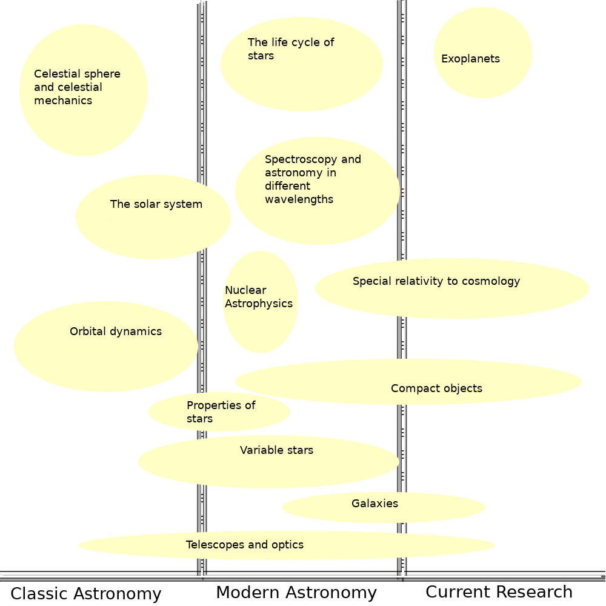

Update (2 Sep) : The framework of this course is under constant reconsideration until I find a good fit. Your suggestions are welcome. Feel free to contact me with proposals.
You can find my contact information here.
Update (24 Sep) : The course has begun. Currently I am uploading lectures on YouTube and problems on this website; so the students can study and solve them in
their own time. After everyone has solved the problems, we would meet up and I would clarify doubts etc.
Scroll to the bottom to find the repository of lectures and written material.
Welcome to the course on Astronomy and Astrophysics. On this webpage you can track the progress of the course as well as find the relevant content and notifications.
The goal of this project is teaching key concepts in Astronomy and Astrophysics through the Physics, Chemistry and Mathematics known to the students of Joint Entrance Examination (Advanced).
Students will learn a good deal of astronomy and physics, as well as solve fun and challenging problems. JEE students will gain problem solving perception and skill.
Scroll down to see the tentative course content and content sample. The fee and class schedule will be decided after first few classes according to the class' needs.
To show interest, fill the form below. If you can't see the embedded form, here is the link: https://forms.gle/ZBQuevusQRrSQhaB8.
I will send you a link to join a Telegram group on email after you sign up.
: Course Content :

: Details on modules (not taught in this order) :
Celestial Sphere and Celestial Mechanics
The celestial sphere is the basis of astronomy. It is an imaginary sphere on which we map the heavens. In this module you will learn
about the paths of Sun, Moon and planets, the coordinate systems in astronomy, calculating angular distances and a lot more.
Telescopes and Optics
In this module you will learn the optics needed to understand and create telescopes. You will learn the development of telescopes from simple lens
telescope to space telescopes. You will also learn about different instruments used with the telescopes and the process of observing.
Orbital dynamics
The Keplerian and Newtonian formulation of how planets, asteroids and comets orbit their host stars. Binary stars and planetary orbits around binary stars. Bonus: Dark Matter.
An overview of our neighbourhood, origin of the solar system, properties of all the constituents, our history of exploration etc.
Nuclear Astrophysics
What goes on in the cores of stars? Where does the radiation come from and what are its laws? How do we estimate ages of stars?
Spectroscopy
A very important tool in astronomy. How to understand spectra, how to calculate various parameters from a spectrum etc
Astronomy at different wavelengths
An overview of radio astronomy, IR astronomy, Visible astronomy and X-ray astronomy. Their scopes, what you see in different wavelengths, different kinds of telescopes and detectors used.
Life cycle of stars
Where do stars come from? How do they perish? What is the HR diagram? What are the conditions under which specific stars form? When do supernovae occur? What is a degenerate star?
The milky way, Magellanic clouds, Andromeda, local group, large scale structures, types of galaxies, active galactic nuclei.
Special Relativity
Historical background, problem with ether, Invaribility of speed of light, space/time contraction/dilation, Lorentz transform, twin 'paradox', tests and evidence for SR.
Cosmology
Cosmic microwave background radiation, Hubble's discovery, the Lambda term in field equations, dark energy and expansion, basic formalism.